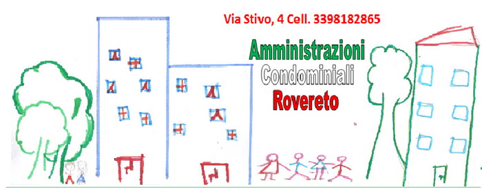

📊
Gestione amministrativa
Bilanci, rendiconti, ripartizioni, convocazioni e supporto nella gestione documentale del condominio.
Amministratori Condominiali Rovereto affianca condomìni, proprietari e residenti con un servizio organizzato, trasparente e puntuale: dalla gestione amministrativa alla manutenzione, fino alla consulenza per ogni esigenza condominiale.
Il nostro obiettivo è semplificare la vita condominiale: contabilità ordinata, comunicazioni rapide, gestione delle assemblee, coordinamento dei fornitori e controllo degli interventi.

Dalla parte amministrativa alla supervisione operativa, costruiamo un metodo di lavoro pensato per ridurre problemi, ritardi e incomprensioni.
Bilanci, rendiconti, ripartizioni, convocazioni e supporto nella gestione documentale del condominio.
Coordinamento degli interventi, richiesta preventivi, controllo avanzamento e supporto nelle urgenze.
Assistenza su problematiche tra condòmini, regolamenti, assemblee e decisioni operative.

Lo studio valorizza aggiornamento, professionalità e attenzione alle buone pratiche del settore condominiale.
Fissa un appuntamento o scrivi direttamente su WhatsApp. Ti ricontatteremo per valutare la situazione del condominio e indicarti il percorso più corretto.
Vai ai contatti